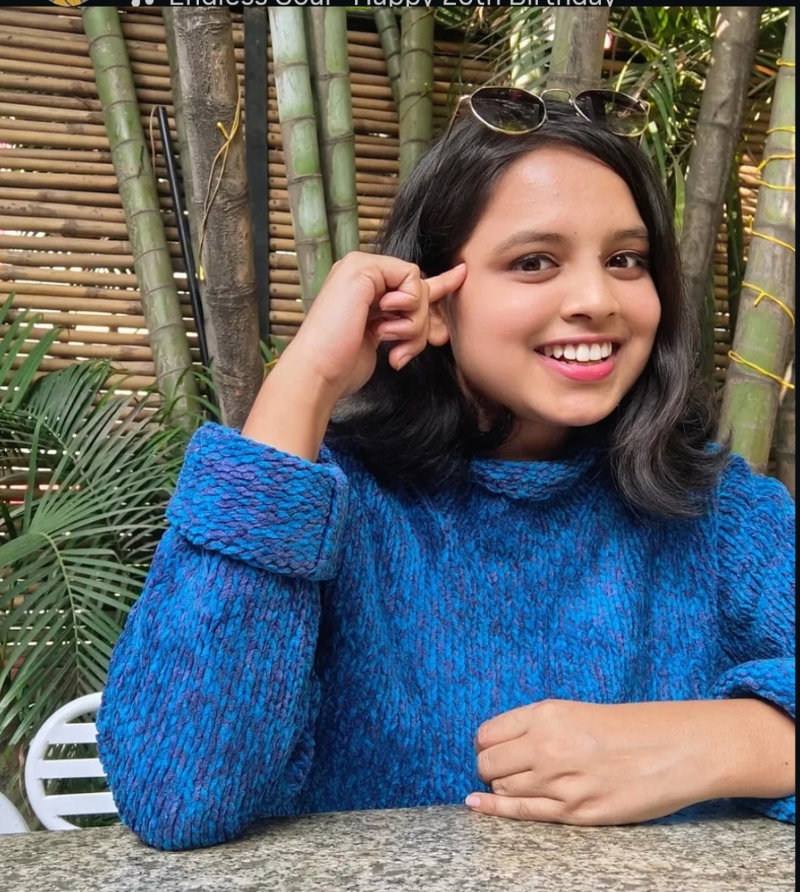

30 Days
of being
an intern.
Agentic AI Intern
Kerala → Bangalore
One overnight bus. A backpack. Friends who made it less scary.
A little scared. A lot together.
First morning at Finesse IT Labs Pvt Ltd. Honestly? A bit scared. The only thing keeping me calm was that my friends were right next to me.
We met our mentor — Manasa M. — and the cohort: 5 interns, all wide-eyed. It was Allu who introduced us to Manasa — she then walked us through her own journey as an RPA developer and what working at Finesse has been like.
I was given the topic and walked through frontend, backend, and APIs — how they talk to each other.
Day 02: Automation Anywhere begins.
Day 2 we opened the Automation Developer Career Quest — Start Phase. Short, hands-on videos and skill-stacking. We knocked it out by the end of the week.
Pro tip from Manasa: She taught us through lots of quizzes during those first two weeks. Turns out, getting quizzed is actually a really fun way to lock in the fundamentals.
Task bots & the RPA Challenge.
Week two was use-cases on Automation Anywhere — building task bots, chaining packages, getting them to actually work.
We built a bot that reads usernames from an Excel sheet, logs into the WB Excise Portal, extracts specific data, and writes the results back into the Excel file.
The RPA Challenge was the most fun part. The catch: I couldn't run it on my laptop — no Windows. Borrowed setups, side-by-side debugging, and a lot of "wait, watch my screen."
+2 interns join. We're 7 now.

UiPath Academy: Agentic Automation.
Switched gears to UiPath Studio Web and the Agentic Automation Training learning plan — building agents with no-code + Autopilot, prompt engineering, evaluation strategies, and Gen AI activities on UiPath Studio.
We built an agent that autonomously reads incoming emails, performs sentiment analysis, categorizes intent, and extracts key info. It then routes the email to the correct team and generates a draft response.
Built a bot using Python, pytesseract, and fitz to read medical PDFs, extract Conclusion sections, and use Regex to detect TIRADS / TR classifications (like TR 3, TI-RADS IV) to determine if a patient has a Thyroid condition.
We also automated report translation, converting business reports from Spanish to French and French to Spanish, eliminating hours of manual localization work.
Final presentations.
Final stretch — lots of use-cases on UiPath. By now the tools feel less like a wall and more like a toolbox.
Manasa took us through a deep dive into Machine Learning using the Iris dataset. She didn't just show us; she explained the code and made sure we actually understood it.
Oh, and every Friday evening? We shut down the bots and played skribbl.io together. Highly competitive, terrible drawings.
Everyone presented their final projects. By the end, I didn't just know my own agent, I understood exactly what all these different autonomous agents do in the real world:
- → Autonomous IT Service Desk Agent
- → Autonomous Finance Reconciliation Agent (My Topic)
- → Autonomous Medical Coding Agent
- → AI-Powered Legal Contract Negotiation Agent
- → Insurance Claims Investigation Agent
Every day with Manasa was the highlight. She'd ask us what we did, where we went, what we ate. Real check-ins, not status updates.

Manasa M.
The person who turned a scary first day into a routine we looked forward to. She designed the path: Automation Anywhere → UiPath → real use-cases, and made space for questions that weren't on the syllabus.
Two platforms. One month.
Studio Web agents, prompt engineering, evaluations, Maestro orchestration.